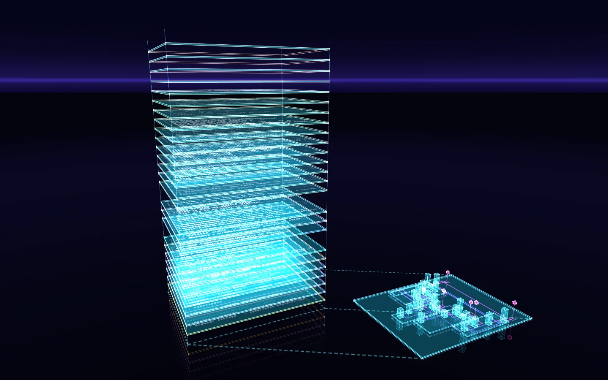

component pulled out
deployment Where the browser runs
state A drawing under the pointer
state From opening the page to reading a folder
state Flat, the skyline, the folder tower, the city and the street
state The token panel
use case What a reader does with the browser
user journey A reader's journeys
capability What the browser can do
feature What the browser offers
operation How the browser is reached
vision Why the browser exists
stakeholders Who cares about the browser
requirements What the browser must do
quality requirements How well the browser must work
glossary Words the browser uses
backlog Work wanted on the browser
plan How the browser gets Cyberspace
decisions How the browser is built and looks
folder The cyberspace explorer
contracts What links and browsers rely on
verification How the browser is checked
delivery Where the browser is published
runbooks Working on the browser
limitations What readers run into
references What the browser builds on
Drawn · 8
Written · 3
Knowledge · 15
Cyberspace explorer
david-brandt-the-icelander / cyberspace-explorer main
Flat Cyberspace
Choose another repository
The root folder is a tower of 26 floors, one per view. Pull a floor out to walk through it. Scroll to climb · click a floor to pull it out
Folder
Cyberspace explorer
./.dev · 26 files
Lets a person read what agents keep in a repository's .dev folders (how it is built, what it does and what it knows about itself) in a browser, with nothing to install, clone or run.
Cyberspace explorer
28 parts · 6 beacons · 40 traces